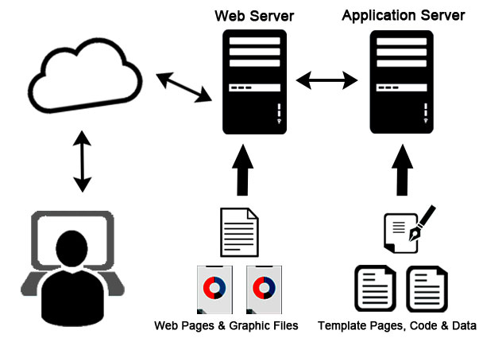

A server is a computer program or device that provides a service to another computer program and its user, also known as the client. In a data center, the physical computer that a server program runs on is also frequently referred to as a server.
Web Server
A web server is a computer that runs websites. It's a computer program that distributes web pages as they are requisitioned. The basic objective of the web server is to store, process and deliver web pages to the users. This intercommunication is done using Hypertext Transfer Protocol (HTTP).
Leading web servers include Apache, Microsoft's Internet Information Services (IIS) and Nginx -- pronounced engine X.
Proxy Server
A proxy server is a computer system or router that functions as a relay between client and server. It helps prevent an attacker from invading a private network and is one of several tools used to build a firewall. The word proxy means "to act on behalf of another," and a proxy server acts on behalf of the user.
In computer networking, a proxy server is a server application that acts as an intermediary between a client requesting a resource and the server providing that resource

FTP Server
The File Transfer Protocol is an important part of the FTP Architechture and is a standard communication protocol used for the transfer of computer files from a server to a client on a computer network. FTP is built on a client-server model architecture using separate control and data connections between the client and the server To access the FTP server open a file explorer and type ftp://serverIP .

Application Server
An application server is a modern form of platform middleware. It is system software that resides between the operating system (OS) on one side, the external resources (such as a database management system [DBMS], communications and Internet services) on another side and the users' applications on the third side; popular application servers include J2EE, WebLogic, Glassfish, JBoss.

DataBase Server
A database server is any server that runs a network database application and maintains database files, such as Microsoft SQL Server or Oracle. SQL Server is a high-performance database management system. A database server is a server which uses a database application that provides database services to other computer programs or to computers, as defined by the client-server model.
Mail Server
A mail server (or email server) is a computer system that sends and receives email.
In many cases, web servers and mail servers are combined in a single machine. However, large ISPs and public email services (such as Gmail and Hotmail) may use dedicated hardware for sending and receiving email Microsoft Exchange, Exim and Sendmail are common examples of mail server programs A mail server works with other programs to create a messaging system.